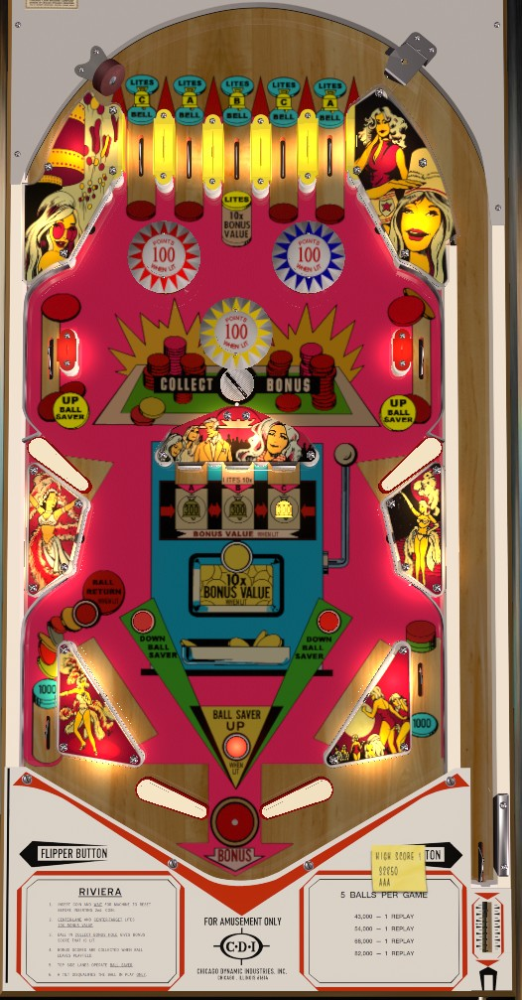

Top lanes and center standup targets award 50 points. The 5 top lanes will, from left to right, award C, A, B, C, and A. Hitting the center standup targets will award, from left to right, A, B, and C.
When A is lit, the red pop bumper is lit for 100 points instead of 10. When B is lit, the yellow pop bumper is lit for 100 points instead of 10, and 10x Bonus Value is qualified. When C is lit, the blue pop bumper is lit for 100 points instead of 10. Lighting all 3 letters in the same ball activates the Ball Return automatic kickback in the left out lane for the rest of the ball.
Each lit letter is worth 300 points to the Bonus. Lighting the B, regardless of any other lit letter(s), qualifies 10x Bonus Value, so each letter awards 3,000 in bonus instead. The Bonus is scored when the ball drains or enters the saucer just below the yellow pop bumper. Strategy on Riviera, then, is to light all 3 letters as soon as possible, then keep the ball above the lower third of the playfield using the upper flippers to score as many lit bumpers and saucer bonus collects as possible.
The center Ball Saver post, which completely blocks the center drain when it is active, gets raised by going through the Up Ball Saver upper side lanes, and is lowered by pressinf the Down Ball Saver rollover buttons near the slingshots. Slingshots score 10 points and out lanes score 1,000.
There is no extra ball feature or playfield Special. Tilt ends the ball in play only.
The below picture of Riviera's playfield was taken from the VPX recreation by JPSalas.
